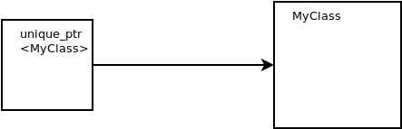
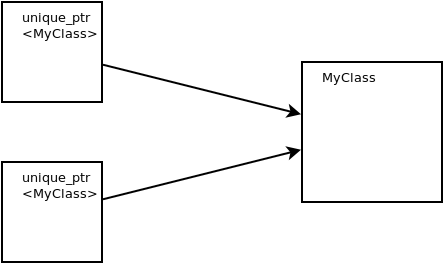

std::unique_ptr<>¶
Simplest: std::unique_ptr<>¶
#include <memory>
void do_something() {
std::unique_ptr<MyClass> tmp(new MyClass(666));
do_something_with(tmp.get());
...
}
Destructor called at every return path
No leaks
std::unique_ptr<>: Basic Usage¶
std::unique_ptr<>is a pointer⟶ supports
->and*operators in a natural way
ptr->do_something();
MyClass copy = *ptr;
std::unique_ptr<>: Ownership (1)¶
Question: who is responsible to delete the object?
Answer:
If there is only one that points to it, then he’s responsible
If two point to it, then both are responsible
unique_ptr<MyClass> owner(
new MyClass(666));
|
 |
Just don’t do it! MyClass* tmp = new MyClass(666);
unique_ptr<MyClass> owner1(tmp);
unique_ptr<MyClass> owner2(tmp);
|
 |
std::unique_ptr<>: Ownership (2)¶
Shared ownership: how else? ⟶ Copy!
unique_ptr<MyClass> owner(new MyClass(666));
unique_ptr<MyClass> another_owner = owner;
... error: use of deleted function ...
Good news …
std::unique_ptr<>is not copyableOnly movable
std::unique_ptr<>: Ownership Transfer¶
“Unique” means that there can only be one owner
Passing a std::unique_ptr<> …
void do_something_with(unique_ptr<MyClass> c);
void do_something()
{
unique_ptr<MyClass> owner(new MyClass(666));
do_something_with(owner);
}
error: use of deleted function ... (copy) ...
std::unique_ptr<>: Ownership Transfer¶
Back in C times …
Ownership conflict
No solution but to be careful
C++ 11: no implicit transfer when using smart pointers ⟶ compiler support for correctness
⟶ Clarity, no ambiguity
Explicit ownership transfer: std::move
void do_something_with(unique_ptr<MyClass> c);
void do_something()
{
unique_ptr<MyClass> owner(new MyClass(666));
do_something_with(std::move(owner));
assert(owner == nullptr); // owner has given up ownership
}
std::unique_ptr<>: Juggling¶
Clearing
unique_ptr<MyClass> owner(new MyClass(666));
owner.reset(); // deletes object
Filling
unique_ptr<MyClass> owner;
owner.reset(new MyClass(666));
Stealing
unique_ptr<MyClass> owner(new MyClass(666));
MyClass* obj = owner.release();
std::make_unique<>: Pure Decadence¶
Lazyness
C++ 11 brings lots of tools to save you keystrokes
e.g.
auto
auto ptr = make_unique<MyClass>(666);